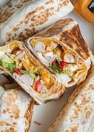

Chipotle Chicken Bacon Burrito

Follow the Recipe Description
Ingredients
- 1 cup Cottage Cheese
- 1/4 Cup Red Enchilada Sauce
- 1 Can Chipotle Peppers & Adobo Sauce
\
- 24oz Chicken Breast
- Garlic Salt
- Smoked Paprika
- Onion Powder
- 1/2 Cup White Rice(Dry)
- 1 Cup Chicken Bone Broth
- Cilantro
- 1 Tbsp Lime Juice
- 1 Cup Fat Free Mozarrella
- 4 Diced Center Cut Bacon Strips(Cooked)
- Fresh Chives
- 4 Low Calorie Tortillas
Steps
- Make the Chipotle sauce with:
- 1 cup of Cottage Cheese
- Quater Cup Enchilada Sauce
- 1 Chipotle Pepper Adobo Sauce
- Blend
- Take the Chicken Breast and season with:
- Garlic
- Salt
- smoked Paprika
- Onion Powder
- Transfer the Chicken into a bowl and mix everthing together
- Air Fried at 375° for 15 to 20 minutes
- Diced the Chicken at put it in the bowl along with:
- 1 cup of fat free Mozzarella
- 4 Diced Bacon Strips
- Fresh Chives
- Mixed together
- Assemble by adding 1/4 of the chicken into a tortilla
- Fold everthing into a Burrito
- Toast both sides until golden brown